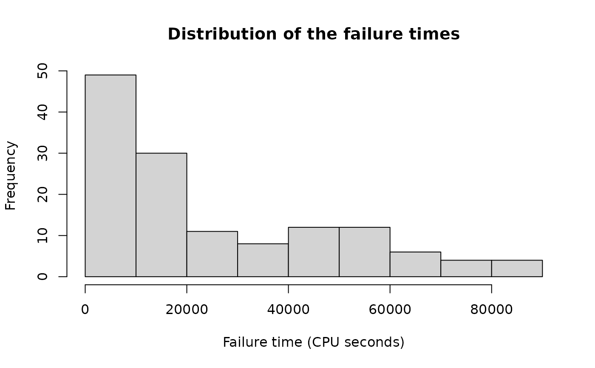

Software system failures
software.RdThese data give the failure times (in CPU seconds, measured in terms of execution time) of a real-time command and control software system. The data can be used as an example for fitting various reliability models. Musa et al. recommend fitting a nonhomogenous Poisson process with linearly exponentially decreasing failure time.
Source
Musa, J.D., Iannino, A. and Okumoto, K. (1987) Software reliability: measurement,prediction, application, New York: McGraw-Hill, 305.
Examples
# Load necessary libraries
library(hsds)
# Load the software dataset
data("software")
# Distribution of the failure time
with(
software,
hist(
time,
main = "Distribution of the failure times",
xlab = "Failure time (CPU seconds)"
)
)

# Plot of the cumulative number of events over time
with(
software,
plot(
time,
failure_id,
main = "Cumulative number of failures over time",
xlab = "Time (CPU seconds)", ylab = "Number of failures"
)
)
# Add lines
with(software, lines(time, failure_id))